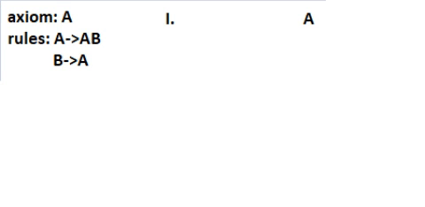

Metoda wykorzystująca L-System
L-System (system Lindenmayera) to zestaw reguł produkcji gramatyki formalnej służący do tworzenia graficznych tworów o budowie fraktalnej. L-Systemy są gramatykami, w których produkcje stosuje się iteracyjnie od stanu początkowego przez założoną liczbę powtórzeń.
Mniej formalnie cały system polega na tym, że:
- Mamy wyraz początkowy (axiom)
- Mamy zestaw reguł opisujących co ma dziać się z axiomem
- Tworzymy kolejne generacje gramatycznych zdań
- Zamieniamy zdania gramatyczne na rozkazy do rysowania (znany wszystkim rysujący żółwik)
 GIF przedstawia kolejne generacje zdania zgodne z jakimś zestawem reguł je opisującym.